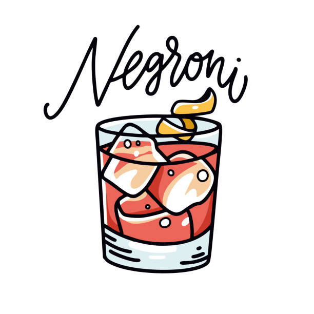

Negroni

A Negroni is an Italian cocktail, made of one part gin, one part vermouth rosso and one part Campari, garnished with orange peel. It is considered an aperitivo. A traditionally made Negroni is stirred, not shaken; it is built over ice in an old-fashioned or rocks glass and garnished with a slice of orange
Igreadiants
- Campari
- Gin
- Sweet vermouth
- Ice
- Orange Peal or a Slice
Tools
- Jigger
- Bar spoon
- Cocktail glass (whisky/rock glass)
- Mixing glass (optional)
Steps
- Add ice to the Mixing glass
- Pour one part gin, one part vermouth rosso and one part Campari on the Ice using the Jiger in the Mixing glass
- Stir everything with the long bar spoon
- Now strain your cocktail into the whisky glass on the new ice
- Garnish it with Orange Peal or a Orange slice
Dark 'N' Stormy
Espresso Martiny
back